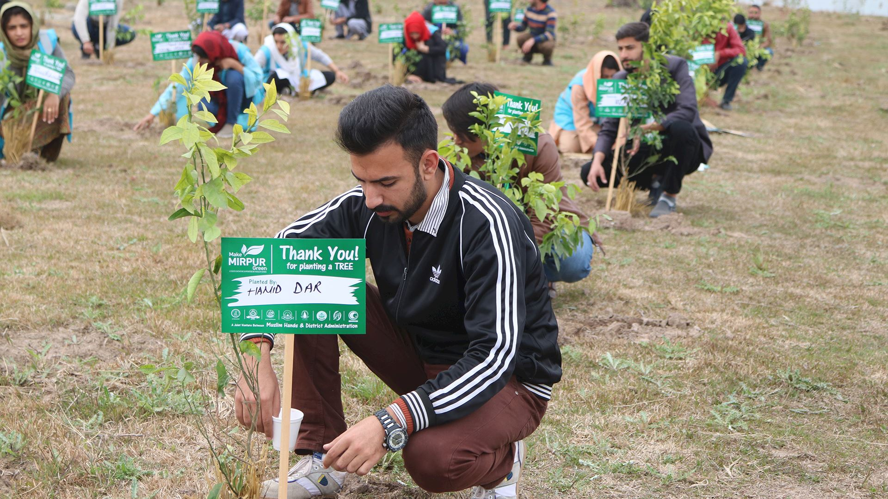
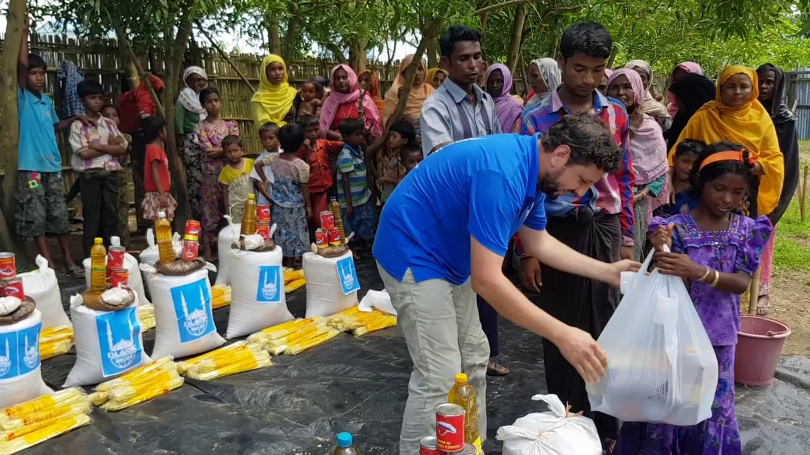
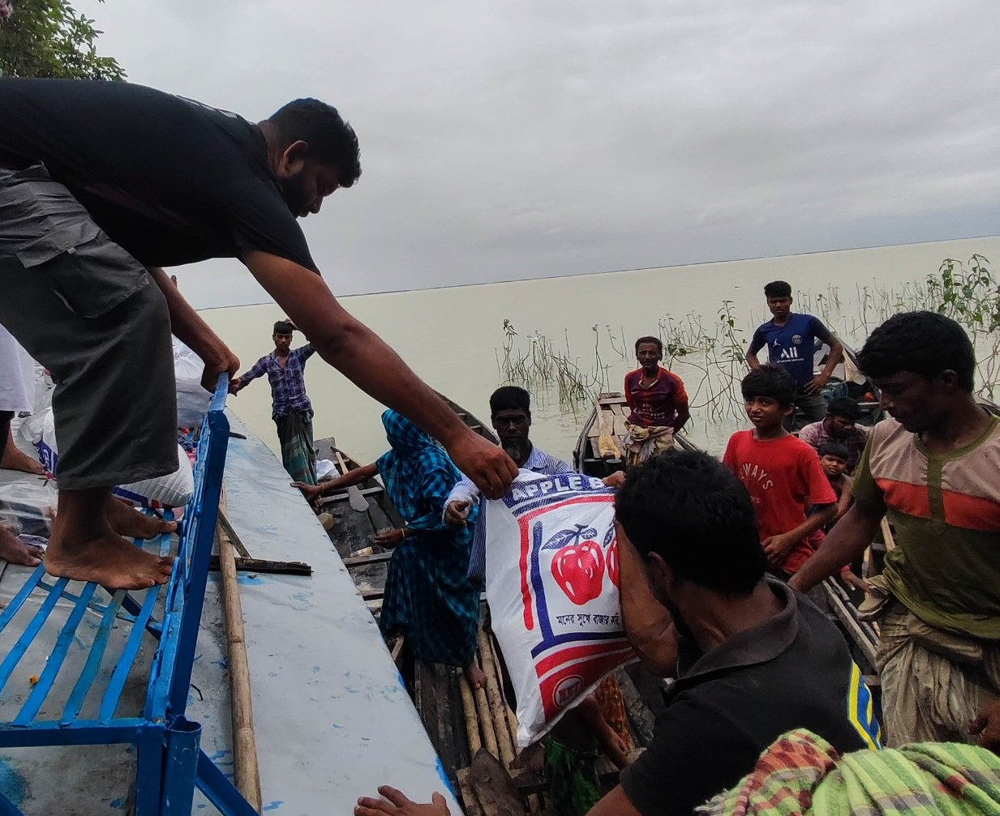
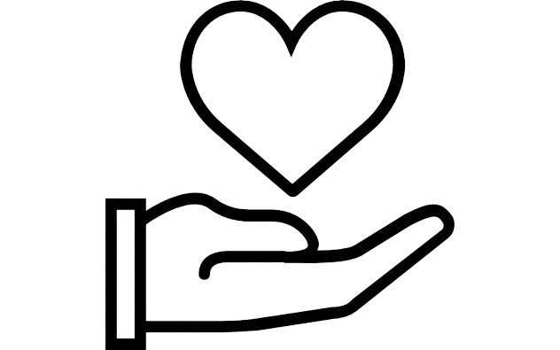

“And establish prayer and give Zakat, and whatever good you put forward for yourselves – you
will
find
it with Allah.”
(2:110, Qur'an)
Purpose of Zakat
The basic purpose of Zakat is to maintain economic balance in society so that circulation of wealth continues from rich to poor and never stays in one hand.So we can overcome poverty and other social evils from our society. The zakat purifies our wealth as it goes into the hands of rich to poor, stabilizes economic condition of the society and ensures that each person is benefitted from the wealth.It's an important pillar of islam....
Whom to give Zakat
- Eligible among own relatives
- Eligible among the neighbours
- Those who have converted to Islam and are in need
- Those in debt
- In the way of Allah
- The traveller
- Zakat collectors
- The Poor
Al-Hazra Islamic Foundation
Bounded to spread the beauty of Islam
Zakat
We deliver zakat money to every poor starting from our community.And then our neighbourhood. We can ensure you that every people in need will be counted and delivered equally.
Korze Hasana
We deliver zakat money to every poor starting from our community.And then our neighbourhood. We can ensure you that every people in need will be counted and delivered equally.
Social Works
We deliver zakat money to every poor starting from our community.And then our neighbourhood. We can ensure you that every people in need will be counted and delivered equally.
Emergency Relif
We deliver zakat money to every poor starting from our community.And then our neighbourhood. We can ensure you that every people in need will be counted and delivered equally.




Extend Your Hand of Charity by Sadaqah. Earn Rewards for the Hereafter.
To those who believe and do deeds of righteousness has Allah promised forgiveness and a great reward. [Qur’an, 5:9]
.png)
Build A Mosque
Islamic Projects are aimed at providing poverty-stricken communities with a secure and clean place to pray and connect as a community.
Donate Here
Help for Education
Islamic Projects are aimed at providing poverty-stricken communities with a secure and clean place to pray and connect as a community.
Donate Here

Donate Here
Support an Orphan
Islamic Projects are aimed at providing poverty-stricken communities with a secure and clean place to pray and connect as a community.
Donate Here